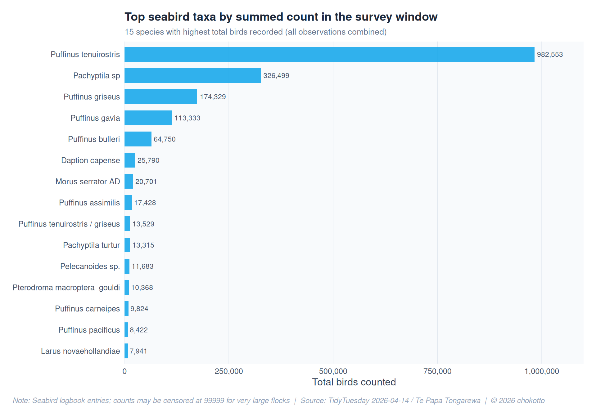
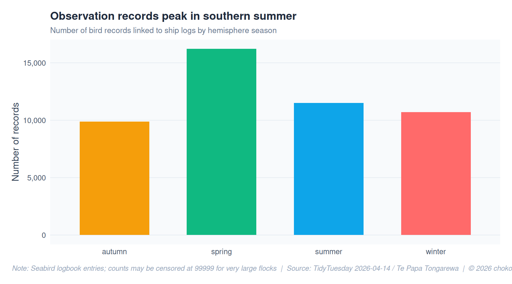
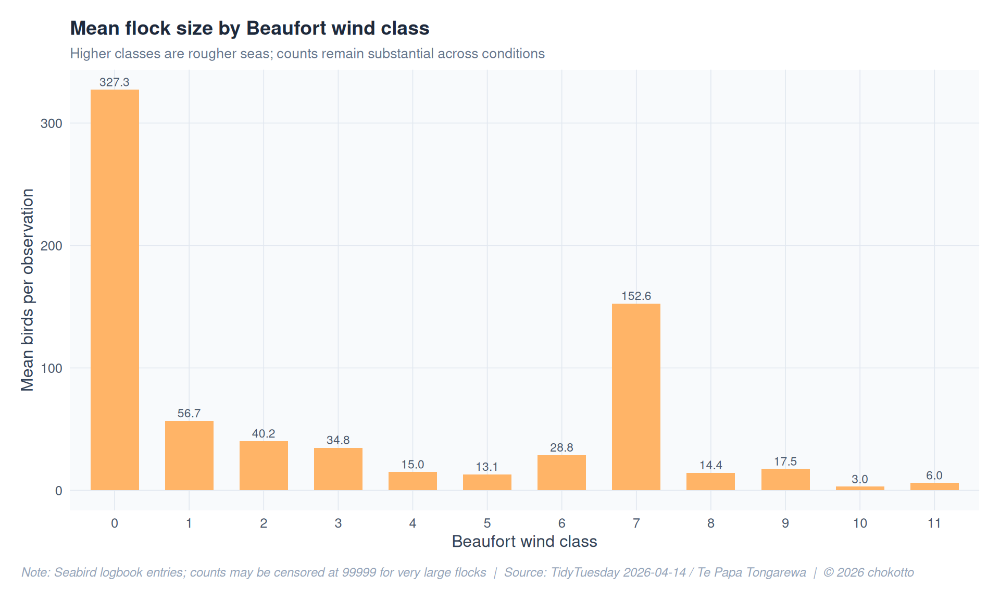
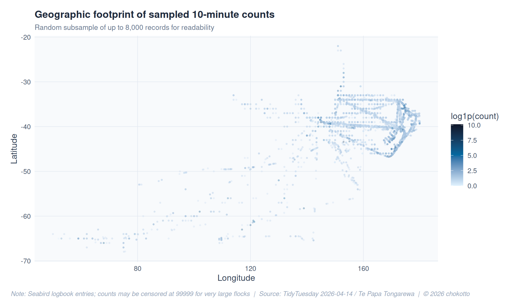

Code
library(tidyverse)
library(scales)
library(glue)
library(patchwork)
library(ggtext)
library(ggrepel)
library(showtext)
library(colorspace)
library(janitor)
library(forcats)chokotto
April 14, 2026
This week we explore seabird observations recorded under the Australasian Seabird Mapping Scheme: counts from ships during 10-minute periods near New Zealand waters. The data links bird records to ship position, weather, and season.
birds_path <- file.path(getwd(), "data", "birds.csv")
ships_path <- file.path(getwd(), "data", "ships.csv")
base_url <- "https://raw.githubusercontent.com/rfordatascience/tidytuesday/main/data/2026/2026-04-14"
if (!file.exists(birds_path)) {
birds_path <- paste0(base_url, "/birds.csv")
}
if (!file.exists(ships_path)) {
ships_path <- paste0(base_url, "/ships.csv")
}
birds <- readr::read_csv(birds_path, show_col_types = FALSE, na = c("", "NA"))Warning: One or more parsing issues, call `problems()` on your data frame for details,
e.g.:
dat <- vroom(...)
problems(dat)ships <- readr::read_csv(ships_path, show_col_types = FALSE)
birds_ship <- birds |>
inner_join(ships, by = "record_id") |>
mutate(
species_label = coalesce(species_scientific_name, species_common_name, "Unknown"),
count = replace_na(count, 0L)
) |>
filter(!is.na(species_label), species_label != "Unknown")
beaufort_path <- file.path(getwd(), "data", "beaufort_scale.csv")
if (!file.exists(beaufort_path)) {
beaufort_path <- paste0(base_url, "/beaufort_scale.csv")
}
beaufort <- readr::read_csv(beaufort_path, show_col_types = FALSE)NOTE_TEXT <- "Seabird logbook entries; counts may be censored at 99999 for very large flocks"
SOURCE_TEXT <- "TidyTuesday 2026-04-14 / Te Papa Tongarewa"
CAPTION <- glue("Note: {NOTE_TEXT} | Source: {SOURCE_TEXT} | \u00A9 2026 chokotto")
STYLE_MODE <- "figmamake"
theme_fm <- theme_minimal(base_size = 12) +
theme(
plot.background = element_rect(fill = "white", color = NA),
panel.background = element_rect(fill = "#f8fafc", color = NA),
panel.grid.major = element_line(color = "#e2e8f0", linewidth = 0.3),
panel.grid.minor = element_blank(),
text = element_text(color = "#334155"),
axis.text = element_text(color = "#475569"),
plot.title = element_text(color = "#1e293b", face = "bold", size = 14),
plot.subtitle = element_text(color = "#64748b", size = 10),
plot.caption = element_text(
face = "italic", color = "#94a3b8", size = 9,
hjust = 0, margin = margin(t = 12)
),
plot.caption.position = "plot",
strip.text = element_text(color = "#1e293b", face = "bold"),
legend.background = element_rect(fill = "white", color = NA),
legend.text = element_text(color = "#475569"),
plot.margin = margin(15, 15, 15, 15)
)
theme_active <- theme_fm
COL_PRIMARY <- "#0ea5e9"
COL_SECONDARY <- "#f59e0b"
COL_ALERT <- "#ef4444"
COL_POSITIVE <- "#10b981"
COL_BASE <- "#94a3b8"species_tot <- birds_ship |>
group_by(species_label) |>
summarise(total_count = sum(count, na.rm = TRUE), n_obs = n(), .groups = "drop") |>
filter(total_count > 0) |>
slice_max(total_count, n = 15) |>
mutate(species_label = fct_reorder(species_label, total_count))
ggplot(species_tot, aes(x = total_count, y = species_label)) +
geom_col(fill = COL_PRIMARY, width = 0.7, alpha = 0.85) +
geom_text(
aes(label = comma(total_count)),
hjust = -0.1, size = 3, color = "#475569"
) +
scale_x_continuous(labels = comma_format(), expand = expansion(mult = c(0, 0.12))) +
labs(
title = "Top seabird taxa by summed count in the survey window",
subtitle = "15 species with highest total birds recorded (all observations combined)",
x = "Total birds counted",
y = NULL,
caption = CAPTION
) +
theme_active +
theme(panel.grid.major.y = element_blank())
season_n <- birds_ship |>
filter(!is.na(season)) |>
count(season, name = "n_records")
ggplot(season_n, aes(x = season, y = n_records, fill = season)) +
geom_col(width = 0.65, show.legend = FALSE) +
scale_fill_manual(
values = c(
"summer" = COL_PRIMARY,
"autumn" = COL_SECONDARY,
"winter" = lighten(COL_ALERT, 0.2),
"spring" = COL_POSITIVE
)
) +
scale_y_continuous(labels = comma_format()) +
labs(
title = "Observation records peak in southern summer",
subtitle = "Number of bird records linked to ship logs by hemisphere season",
x = NULL,
y = "Number of records",
caption = CAPTION
) +
theme_active +
theme(panel.grid.major.x = element_blank())
wind_df <- birds_ship |>
filter(!is.na(wind_speed_class)) |>
group_by(wind_speed_class) |>
summarise(
mean_count = mean(count, na.rm = TRUE),
n = n(),
.groups = "drop"
) |>
left_join(
beaufort |> select(wind_speed_class, wind_description),
by = "wind_speed_class"
)
ggplot(wind_df, aes(x = factor(wind_speed_class), y = mean_count)) +
geom_col(fill = lighten(COL_SECONDARY, 0.25), width = 0.65) +
geom_text(
aes(label = comma(round(mean_count, 1))),
vjust = -0.4, size = 3, color = "#475569"
) +
labs(
title = "Mean flock size by Beaufort wind class",
subtitle = "Higher classes are rougher seas; counts remain substantial across conditions",
x = "Beaufort wind class",
y = "Mean birds per observation",
caption = CAPTION
) +
theme_active
set.seed(42)
map_df <- birds_ship |>
filter(!is.na(latitude), !is.na(longitude))
# slice_sample(n = min(8000, n())) fails: inside slice_sample(), n() is not nrow(.)
if (nrow(map_df) > 0L) {
n_map <- min(8000L, nrow(map_df))
map_df <- slice_sample(map_df, n = n_map)
}
if (nrow(map_df) == 0L) {
ggplot() +
annotate(
"text", x = 0.5, y = 0.5, size = 4, color = "#64748b",
label = "No latitude/longitude available for mapping."
) +
theme_void()
} else {
ggplot(map_df, aes(x = longitude, y = latitude)) +
geom_point(aes(color = log1p(count)), alpha = 0.25, size = 0.6) +
scale_color_gradientn(
colors = c("#e0f2fe", "#0369a1", "#0f172a"),
name = "log1p(count)"
) +
labs(
title = "Geographic footprint of sampled 10-minute counts",
subtitle = "Random subsample of up to 8,000 records for readability",
x = "Longitude",
y = "Latitude",
caption = CAPTION
) +
theme_active +
theme(legend.position = "right")
}
This post is part of the TidyTuesday weekly data visualization project.
This analysis is for educational and practice purposes only. Data visualizations and interpretations are based on the provided dataset and may not represent complete or current information.